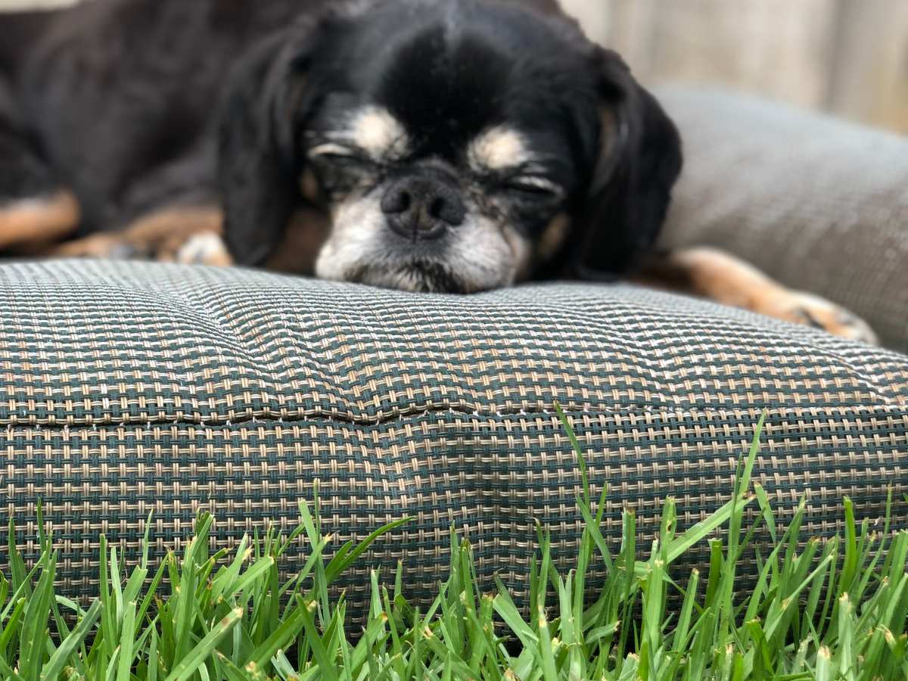
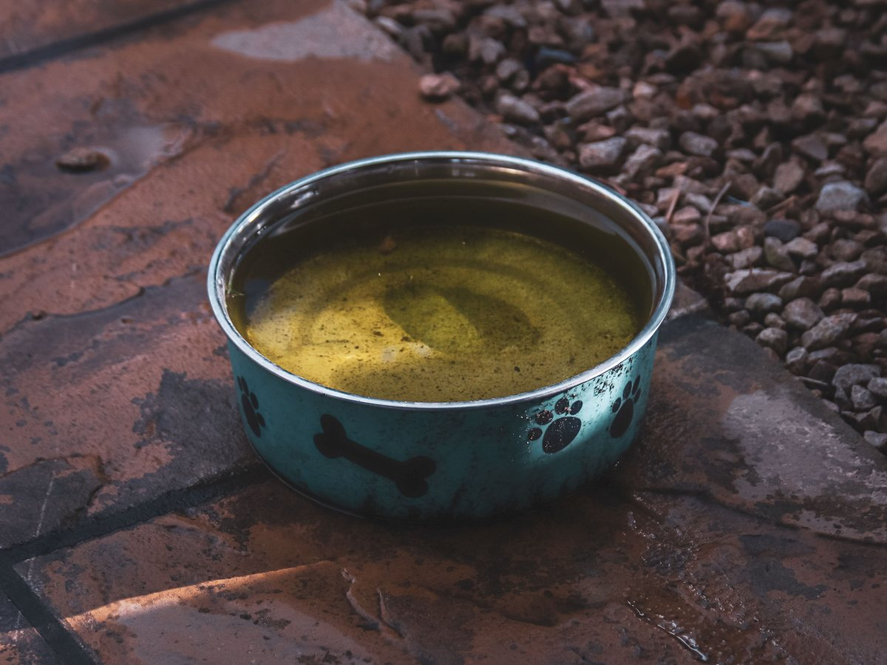
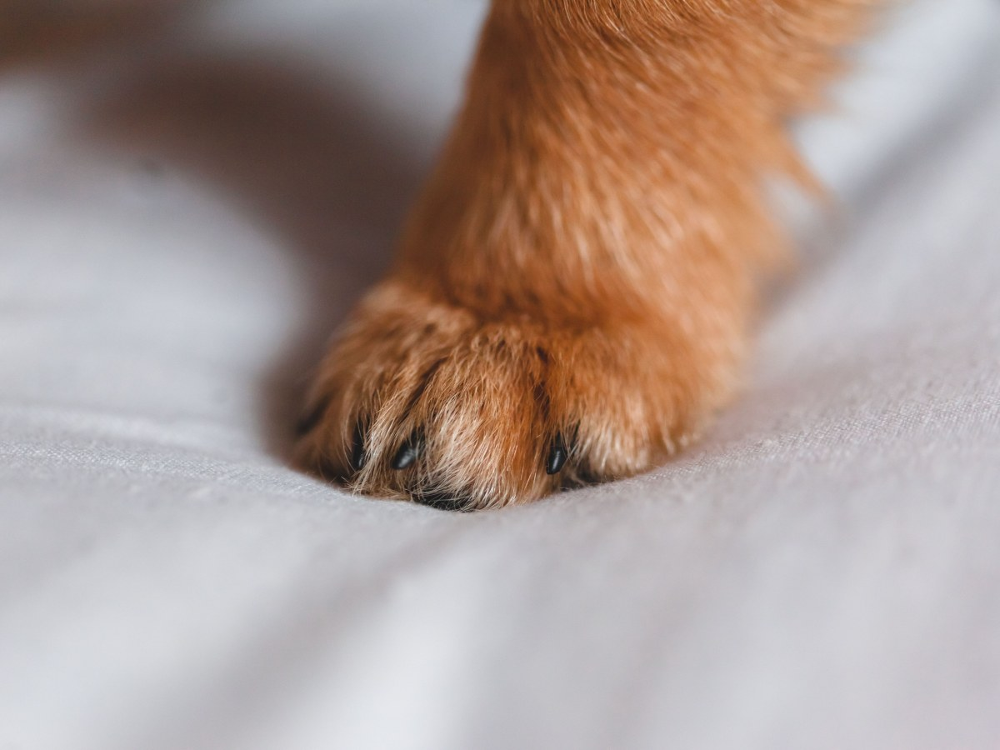
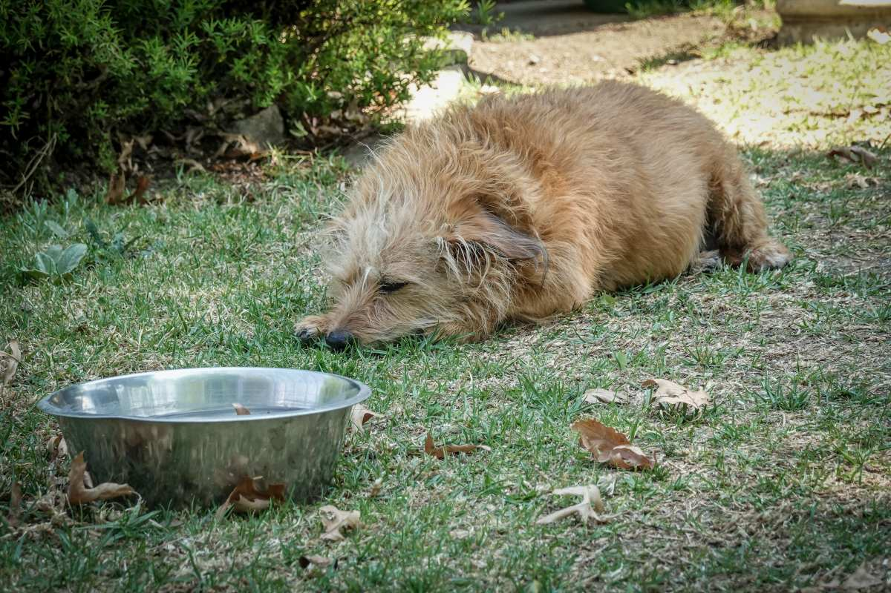
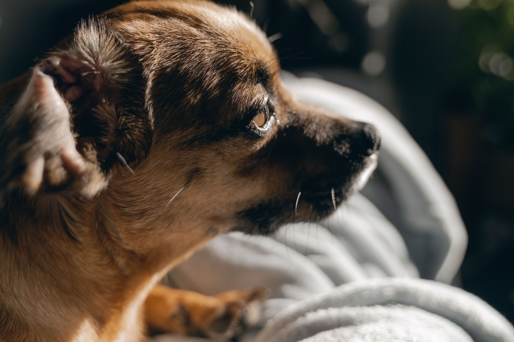
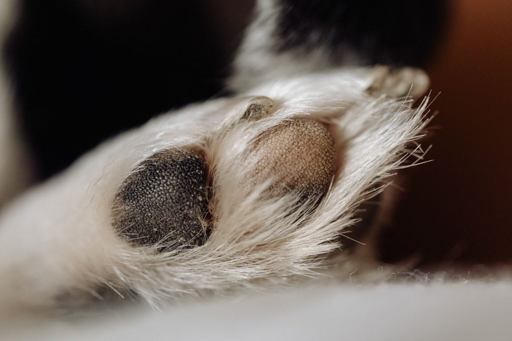

La Florida · Perú 8993
¿Esterilizar? Paso a paso.
Veterinaria Perú: 190 reseñas con 4,5 y familias que vuelven hace años.
- 190reseñas en Google
- 4,5de promedio
- 6días a la semana, hasta las 21
- 0webs: ni veterinariaperu.cl ni vetperu.cl existen
La esterilización, paso a paso
Cuándo, cómo y qué pasa después
-
Antes
Por qué
Salud y convivencia: menos escapadas, menos camadas sin casa.
-
La consulta
Cuándo
La edad la define el veterinario al revisarlo.
-
El día
Cómo es
Llega con las indicaciones que te dio la clínica. Ingresa y te avisan cuándo retirarlo.
-
Los días de después
En casa
Reposo, su collar puesto y el control que te agenden.
Pasos generales: las indicaciones de cada animal las da la clínica en la evaluación.
Lo más difícil es decidir. Lo demás tiene calendario.
La clínica
La de la calle Perú
-

Esterilización
Perros y gatos
Una reseña cuenta la de sus gatos.
-

Urgencias
En horario
Una perrita que se comió una pelota.
-
Sábado
También atienden
Lo destaca una reseña.
-
Controles
La evolución
Uno de los temas de sus reseñas.
-
Gatos
Con paciencia
Atención personalizada, dicen.
-

El doctor
Rolando Neira
Lo nombran familias de hace años.
Servicios tomados de sus reseñas en Google; la lista completa, por teléfono.
«Su atención es muy personalizada, profesional y dedicada a tus regalones».
Una reseña de Google
El reposo
Mantas, patitas y siestas



Fotos de referencia: ninguna es de la clínica.
Dónde está
Perú 8993, La Florida
- Teléfono
- (2) 2281 3886
- Lunes a sábado
- 10:00–21:00
- Domingo
- Cerrado
- Sitio web
- No tiene
«Perú» es la calle: la clínica está en el 8993.
Perú 8993 Abrir en Google Maps
Para la Veterinaria Perú
Qué es real y qué falta
Lo verificado
Dirección, teléfono, horario, reseñas y lo que cuentan del Dr. Neira, al 14-09-2026.
Lo de ejemplo
Los pasos de la esterilización, los servicios y las fotos.
Lo que falta
Una web: con 190 reseñas, quien busca «veterinaria en La Florida» sólo encuentra su ficha.